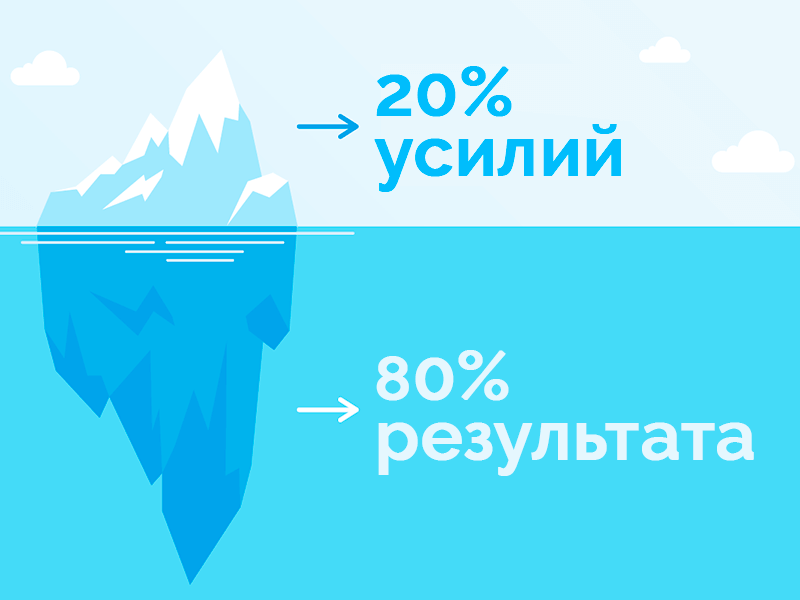

Многие жизненные законы созданы не людьми, а естественными принципами. Закон Парето позволяет управлять ресурсами эффективнее и быстрее достигать поставленных целей. Об этом слышали почти все, поскольку правило учат в университетах, пишут книги и говорят о нем на бизнес-встречах, и даже ведут по нему бизнес дела. С его помощью можно получить максимальный результат при минимальных усилиях. Формула работает как в прямом, так и в обратном направлении. Стоит рассмотреть, как возникло правило Парето и как применять его в реальной жизни — об этом можете прочитать в статье ниже.
Что такое принцип Парето?
Принцип Парето символизирует зависимость усилий, вложенных в дело, и полученного результата в виде прибыли или чего-то другого. Самые важные 20 процентов усилий приносят 80 успеха. Он действенен и в повседневной жизни, и в бизнесе, и даже в психологии и при составлении семейного бюджета. Закономерность все чаще доказывает себя на практике. Если сделать правильные выводы из этой статьи, вы сможете улучшить свою жизнь и доходы компании, бизнеса. Парето можно применить и на малом бизнесе, крупных компаниях, и на монополистах.
Вильфредо Парето — биография
Вильфредо Парето являлся инженером родом из итальянской семьи, но родился в Париже в 1848 году. Спустя 10 лет семья приняла решение вернуться обратно в Италию. Здесь же он окончил политехнический институт, и стал инженером. В 1869 году смог защитить докторскую степень.
После окончания учебы какое-то время работал строителем в качестве государственного служащего ЖД дороги, а затем перешел в частную промышленность. Карьера шла в гору, поэтому ему удалось занять пост руководителя металлургического завода San Giovanni Valdarno.
До наступления 40-летнего возраста, Парето не уделял время науке и тем более на интересовался теоретическими вопросами. В 1886 году он стал успешно преподавать экономические основы и управление в институте
Флоренции. Благодаря уникальному стилю преподавания, смог заявить о себе в качестве противника вмешательства в свободный рынок. Оставался работать до смерти в Лозаннском университете.
Принцип 80/20 был сформулирован в 1906 году, но имя пришло значительно позже. Также наравне с другим теоретиком смог разработать теорию элит, написать ряд научных работ по социологии. Вильфредо был автором нескольких книг. В одной из них он и описал то, что в будущем читатели его книг прозвали “закон Парето”.
На протяжении всей своей деятельности, Парето смог опередить время, в котором жил. Большая часть представленных работ имеет современный характер, чем исследования, проходившие в начале XX века.
Теория Парето
Соотношение вкладываемых ресурсов или усилий к доле результата зачастую варьируется так: небольшая доля расхода ресурса приносит наибольшую часть результата. Другими словами, основа лежит в “20% усилий дают 80% результата, а оставшиеся 80% усилий обеспечивают лишь оставшиеся 20%”

Это теория говорит, что:
- Значимых факторов немного, только единичные приводят к нужным результатам;
- Большая графа расходов сил дает только минимальную часть результата;
- То, что мы видим, не всегда соответствует действительности – всегда имеются скрытые факторы;
- Как правило, ожидания и результат не сходятся, всегда действуют латентные силы;
- Обычно слишком сложно и утомительно разбираться в том, что происходит, а часто это и не нужно – необходимо лишь знать, работает ваша идея или нет, и изменять ее так, чтобы она заработала, а затем поддерживать ситуацию до тех пор, пока идея не перестанет работать;
- Большая часть удачно повернувшихся событий обусловлены силами небольшого числа высокопроизводительных сил, соответственно и наоборот: большинство неудач последствия действий малого числа деструктивных;
- Большинство наших или совместных действий проходят впустую. Они не влияют в полной мере на достижение цели.
Теория Парето представляет собой эмпирическое правило, то есть его можно подтвердить на практике.
История развития
Вильфредо Парето — известный экономист и социолог из Италии. В своей работе он выдвинул одно наблюдение, что 80% всех богатств страны контролируется 20% населения. Данная закономерность прослеживалась и в других сферах. Есть история о том, что перед глобальными расчетами, Вильфредо работал на грядке и заметил, что около 80% горошин находятся в 20% гороховых стручков. Трудно оценить правдоподобность этой истории, но факт один — его заинтересовало распределение, и в процессе дальнейших просчетов он пришел к основе принципа. Тенденция распределения богатств сохраняется в разные исторические эпохи и вне зависимости от государственного строя. Собрав подтверждения, ученый так и не предложил теоретическую основу для своего открытия, о нем на некоторое время забыли, осталась только книга с его мыслями.
Правило подтвердилось после того, как американец Джозеф Джуран изучил труды и книги, статьи итальянского экономиста, и окончательно вывел закон. Это стало вторым началом теории. Таким образом, суть закона Парето следующая: «20% усилий дают 80% результата, а остальные 80% усилий дают 20% результата».
Главной идеей принципа является то, что нужно давать правильную оценку деятельности и сконцентрироваться на важном. Благодаря этому, человек сможет распознать эффективные ресурсы и «сделать ставку» на них. Иными словами, нужно выбрать минимум важных действий для достижения лучшего результата. Данный принцип в дальнейшем эффективно проявил себя на практике. Сначала систему внедрили на японском предприятии, а затем на родине Д. Джурана. Не всегда соотношение оказывается именно таким, но нужно понимать, что дисбаланс будет присутствовать всегда.
Правило Парето сегодня
Сегодня правило применяется практически повсеместно. До сих пор проводятся некоторые исследования, строятся теории вокруг закона, которые активно применяют в жизни.
В 2016г. провели занимательное исследование в Нигерии. По общим показателям страна относилась к достаточно богатым для ее региона, были обнаружены все предпосылки для улучшения жизни населения. Но несмотря на активное развитие, ситуация 2006-2016 года не улучшила общее материальное состояние большинства. По результатам — 76% жителей как были за чертой бедности, так там и остались, а 24% были состоятельными и аккумулировали большую часть национальных богатств.
На сегодняшний день высшие учебные заведения со всего мира включили правило Парето в свою программу.
Один из ярких последователей Ричард Кох — преподаватель экономики из Англии, который обучает в Школе бизнеса. Школа создана на базе Бирмингемского университета, но со своей индивидуальной программой на основе закона Парето. Кох выпустил множество научных работ, которые подтверждают теорию Парето. Ричарда Коха знают в во всем мире, он интересно рассказывает о сильных сторонах закона. Он один из крупных коучей, которые создают финансовые курсы.
Задачи закона Парето
Ориентируясь на закон, люди могут определять для себя приоритетные ресурсы, требующие внимания.
Можно выделить следующие задачи закона:
{kind=link}
- Чтобы получить большую часть желаемого, делайте меньше.
- То, что кажется логичным, не всегда бывает правильным.
- Провалы, как правило, обуславливаются малым количеством неблагоприятных факторов.
- Большое количество действий является малоэффективным или вовсе неэффективным для достижения цели.
- Чем больше задач выполняется, тем меньше продуктивность.
Особенностью закона является возможность структуризации и классификации задач на более глобальные и незначительные. Проанализировав их, получится выявить менее значимые и перестать тратить время на их бесполезное выполнение.
Принципы закона Парето
Принцип Парето имеет научное обоснование, поэтому нельзя называть его «умозаключениями ученого». Итальянский экономист выделил несколько способов проявления закона. К примеру то, что наши планы не всегда соответствуют действительности, поскольку в большинстве случаев мы получаем совершенно иной результат.
К основным принципам закона можно отнести:
{kind=link}
- Распределение капитала во всем мире по-прежнему происходит неравномерно.
- Только 20% покупателей приносят 80% прибыли компании.
- Дисбаланс будет сохраняться в любом случае, даже если бесполезные задачи уменьшатся.
- Только 20% продуктов приносят 80% прибыли при продаже.
На деле это не обязательно будут те самые 80 на 20. К примеру, может быть 70 на 30, 90 на 10. Результат работы может подвергаться сторонним факторам. Именно поэтому получить желаемое не всегда удается. Факторы нельзя контролировать, а значит, прогнозирование «не равно» успеху.
Как работает принцип 80/20
Стандартная формулировка закона работает в сторону разных сфер деятельности. Если человек берется за новое дело, то лишь 20% усилий будут эффективными. Данная цифра не является бесспорной, она может меняться в зависимости от обстоятельств. Например, правильно организованный бизнес начинает приносить прибыль благодаря 40% приложенных усилий. Во всех случаях, усилия влияют на результат всегда в неравной степени.
Примеры, демонстрирующие работу принципа Парето:
- Только 20% посаженных саженцев принесут 80% урожая.
- Только 20% водителей виновато в 80% ДТП.
- Только 20% ученых делают 80% открытий и изобретений.
- Только 20% всех материальных благ принадлежит 80% населения.
Не стоит воспринимать пропорции буквально, их соотношение варьируется. Никто не знает, когда и как вложения в дело сработают. Вначале стоит работать в полную силу, параллельно анализируя эффективность действий. Правило Парето хорошо применять в тех сферах, в которых на первом месте стоит количество, а не качество.
Алгоритм использования принципа Парето
Нельзя считать алгоритм использования закона правилом, которому нужно следовать беспрекословно. Его можно видоизменять, подстраивая под уникальное направление.
{kind=link}
- Целеполагание — это первый шаг к познанию алгоритма. Поначалу работа необходимо сформировать цель и выявить сроки достижения.
- Реальность исполнения цели — второй шаг на пути к конечному результату. Нужно определить, что получится сделать с помощью других лиц, а что без них. Главное, опираться на имеющиеся навыки и не забывать про здравый смысл. Вместе с этим проведите анализ работы и опыта других.
- Сбор данных по будущему плану работы. На этом этапе важно обратиться к теории и к опыту других лиц.
- Оценка эффективности. После сбора информации рекомендуем оценить эффективность и упорядочить данные, опираясь на закон Парето. Поскольку вы знаете свои сроки, можно примерно оценить свои силы и отсеять лишние задачи, на которые не хватит времени.
- Составить список действий. В конечном счете должна остаться «сухая» информация. Опираясь на нее, будет проще составить список результативных действий и оценить каждое по лично выработанной системе. На следующем шаге важно вычленить ядро, убрав все лишнее.
- Отказаться от лишнего. Ликвидировать лишнее поможет здравый смысл. Лучше избавиться от деструктивных задач, которые не помогут достичь желаемого в намеченные сроки.
- В последнюю очередь планирования нужно изменить сроки выполнения задачи и итоги. На основе данных, которые уже есть поправьте разделы 4 и 5 в своем списке.
- Начать идти к цели. Теперь у вас есть конкретный план и пошаговое руководство для достижения цели. Все, что остается — двигаться в нужном направлении.
- Анализ выполненной работы. Время от времени придется вносить корректировки, так как не всегда все идет «по заданному маршруту». Возможно, придется увеличить перечень действий и вернуть «на место» вычеркнутые пункты. Рациональнее все-таки сокращать шаги, а не добавлять их.
Применение закона Парето
Если присмотреться, то данный закон применяется во всех сферах деятельности. Чаще всего закон Парето ассоциируется у людей с экономикой. Но на деле принцип применяется повсеместно. С помощью этого принципа можно улучшить как бизнес, так и личную жизнь. Основное преимущество закона — структурирование всего вокруг и разбор больших задач на маленькие составляющие. Вам это даст сэкономить больше часа в день, вы станете продуктивнее. Хотите узнать что плохо сказывается на вашей жизни, и что нужно взять в свои руки? Посмотрите как работает закон Парето.
Как работает принцип в бизнесе?
Использование правила в бизнесе приносит эффективный результат. Известно, что большая часть прибыли поступает компании за счет продажи небольшого перечня товаров. Увеличить продажи и доход можно, если проанализировать имеющийся ассортимент, сайт и выделить до 30% самых востребованных позиций. Они всегда должны быть в наличии, на сайте или бизнес-странице, уделяйте больше всего внимания рекламе данного товара. В магазинах обычно его располагают отдельно от обычного товара, на специальных подиумах и привлекают внимание к нему. Такой товар может стоять в одном экземпляре, как эксклюзивная модель. Но как только клиент уходит с покупкой, продавец тут же поставит такой же. К примеру, остальные продукты стоит закупать в меньшем объеме, делая ставку на популярные. Возможно, от некоторых непопулярных товаров стоит вовсе избавиться. Необязательно искать топовый товар методом проб и ошибок, это может оказаться долго и неэффективно, — вы можете вбить в поисковую строку «топовый товар + ваша отрасль» или «самые популярные + название раздела товара», и вы найдете много информации, обзоры, прогнозы.
Правила Парето задействуют не только внутри компании. Большую часть дохода фирме приносят лишь 20% постоянных клиентов. Именно им проще продать продукт, чем новому покупателю. Улучшить продажи можно, если повысить лояльность среди потребителей. При этом стоит вкладывать меньше средств на привлечение новых. Лояльные клиенты — прочный фундамент любого бизнеса.
Что касается работников, то они также выкладываются в работе неодинаково. Часть сотрудников — ответственны, трудолюбивы и готовы к переработкам. Другая часть выполняет работу медленно, не вкладывая лишних сил в общее дело. Для повышения эффективности руководителю стоит провести анализ KPI, либо провести иной тип исследования. Нельзя требовать от всех максимальной отдачи. Достаточно, чтобы каждый работник выполнял 80% задач и прилагал столько же сил.
Примеры применения
- В продажах — анализ аудитории и продукции, менеджмент. В основе закона лежит утверждение, что 80% денег приносят всего 20% клиентов бизнеса, а 20% продукции обеспечивают вам 80% продаж. Вам необходимо проверить это утверждение на своем бизнесе и правильно распределить силы, сконцентрируйте их именно на тех 20% клиентов/товаров. Получите максимум информации об этих 20%. Для клиентов вы можете составить анкеты-опросники, вычленить у постояльцев что-то общее и планировать дальнейшие рекламные каналы. Анализ товара позволит чувствовать рынок и своевременно отслеживать тренд, что позволит выгодно и своевременно закупать необходимый товар.
- В рекламе — анализ рекламных кампаний и прибыли от них. Нередко на практике интернет-бизнесов огромная часть рекламных трат уходит впустую, маркетинг не дает пользы и денег. Довольно очевидно, что это те самые 80 %, которые не дают нужных результатов. Потенциально могут привести клиента всего 20% рекламных кампаний. Вначале пути предприниматель тестирует все доступные каналы, изредка подходя серьезно в анализу, тратит деньги и не получает дохода. Научитесь смотреть на картину комплексно и обращать внимание на детали. В зависимости от вашего продукта нужно обращать внимание на разные критерии: место проживания, климат, потребности, доступность. Анализируйте все каналы, которые задействованы, а неэффективные сокращайте. Сфокусируйтесь на выгодных источниках, которые приводят большую часть клиентов, тогда маркетинг уже за месяц принесет пользы, чем раньше за полгода.
- В SEO-продвижении. СЕО продвижение — основа бизнеса в интернете за счет статей. Для качественной оптимизации и достижения результата по сайту, необходимо грамотно собрать ключи и кластеризовать их, то есть раскидать по группам. После написать статьи и просто выгрузить их на сайт. Согласно принципу Парето, примерно 8 из 10 потенциальных покупателей приведут 2 из 10 используемых ключей. Выяснить правильность этого утверждения можно через сервисы аналитики. Проанализируйте ваш сайт и используйте только релевантные вашему каналу запросы. Если ключи ничего не дают, удалите их. Пользы от остальных будет больше, если вы добавите новые. Также следует учесть, что этот принцип распространяется абсолютно на все: качество контента, полезность и многое другое.
- Обработка возражений от клиентов. Большую часть жалоб на компанию или предоставляемый товар оставляют ⅕ потребителей. Порой эти люди даже никогда не пользовались услугами вашей компании. С жалобами сталкиваются все, даже успешные фирмы. Это желательно учитывать при общении с недовольными клиентами. Просматривайте все негативные отзывы и постарайтесь оперативно разбираться с проблемами, не накапливая их. Применяйте принцип и здесь: всего 20% от всех покупателей требуют много внимания. Если вовремя обрабатывать эти заявки, негатив не навредит бизнесу и прибыли.
- Управление сотрудниками и их эффективностью. Всего пятая часть сотрудников работает на «5+», но та оставшаяся часть справляется на «2-3-4». При этом лишь 20% трат на отличных сотрудников вполне себе окупаются. Так ли это в вашем бизнесе? По принципу Парето большинство из коллектива ведут себя пассивно. Предположим, что вы приняли решение всех уволить и принять новых сотрудников. Однако правило гласит, что все равно будет всего 20% высокоэффективными. Поэтому нет смысла бросаться из крайности в крайность, стоит работать над повышением эффективности всех сотрудников и внедрить тайм-менеджмент, уволить откровенных “двоечников”. Психология поможет добиться хорошего результата без излишних усилий.
- Диета и питание 80 на 20. В данном случае речь идет о формате питания, который включает в себя как правильно сбалансированные блюда, так и вредности. Основная идея: 80% времени нужно кушать только здоровую пищу и хорошо сбалансированную пищу, а остальные 20% оставить на приятные, но не полезные блюда. То есть пару раз в неделю, можно устраивать читмил. Ноль ограничений и никакого дискомфорта, наоборот настроение будет выше! Этот формат не диета, а восстановление баланса в питании. Похудеть питаясь по принципу 80/20 получится без особых усилий, а главное — результат будет держаться за счет переработанных привычек и гармонии.
Принцип Парето: применение в саморазвитии
В новых начинаниях, особенно в моментах, которые касаются пересиливания себя, самое сложное — продумать первые шаги к результату. Поэтому правило Парето будет уместно и здесь. Следует определить всего 20% основных действий и продумать шаги по Парето, которые будут стоить усилий. Грамотно подойдя к своему развитию и прописав этапы, вы сможете с минимальными усилиями достичь результата и ощутимо улучшить свою производительность. Правила особенно полезны для людей, которые не умеют планировать личное время и привыкли распыляться на 100 задач одновременно, тратя много усилий и времени за посредственный результат. Закономерность заключается в следующем: доказывает: люди тратят 80% времени на бессмысленные задачи, а по итогу не успевают основное.
Закон Парето применим для саморазвития:
- в спорте;
- в изучении языков;
- в быту при распределении домашних дел;
- в гармоничных отношениях с партнером;
- в тайм-менеджменте;
- в распределении бюджета.
И это далеко не все отрасли жизни, где можно применить закон Парето. Существует принцип жизни 80/20. Он подразумевает выставление четких приоритетов в соответствии с желаниями, что позволяет гармонично работать, развиваться и наслаждаться жизнью.
Примеры
- Обучение профессии. К примеру, вы захотели выучиться на дизайнера и найти хорошую работу в этой нише. Работодатели требуют знания многих программ, композиции и типографики. Что делать? Выучить теорию будет недостаточно, поэтому нужна будет еще и практика. Самым разумным вариантом будет определиться с минимумом знаний и начать практиковаться, так вы сэкономите время и деньги. Пусть вначале без дохода, но сможете наработать портфолио. То есть за свои усилия получите лучший результат.
- Гармония в работе. Многие работают полный день и еще внерабочее время посвящают туда же, занимаясь бизнесом. Зачастую такие люди близки к выгоранию и их распределение скорее 20/80, а не как нужно 80/20. Если тратить столько времени только на работу, то мотивация со временем проседает и продуктивность падает. Соответственно, вы тратите времени на задачу больше, чем могли бы. Такой формат жизни никому не подходит, так как все отношения попадают в 80 процентов, которые производят 20 процентов ценности. Следует меньше посвящать времени одной отрасли и распределять по соотношению 80/20.
- Изучение языка. Большинство людей учат новый язык, так как новые навыки способны продвинуть человека по карьерной лестнице. В среднем, каждый язык состоит из 1 миллиона слов. Изучить правила построения предложений, написание, и выучить слова — трудоемкая задача. Опираясь на принцип Парето, человек сможет понять, что не обязательно учить все миллион слов. Важно сделать упор на часто употребляемые слова и словосочетания. Если выучить 20% слов от общего объема, то можно свободно говорить на иностранном языке.
- Личная эффективность. Многие занимаются саморазвитием, имеют хобби, при этом пытаются читать книги, планировать день и достигать своих целей. Часто так можно привести свой организм к выгоранию, когда ставите перед собой сложно достижимые цели. К примеру, избежать это можно, если правильно пользоваться законом Парето, он просто служит для распределения усилий: не нужно читать ежемесячно по 5 книг, лучше прочесть одну, но получить от нее максимум полезной информации. Ее будет проще применять в реальной жизни, при этом не придется испытывать чувство вины за «проваленное задание».
- Тайм-менеджмент. На деле выполнять все и сразу конечно не получится, но правильно распределять задачи так, чтобы можно было их довести до конца вовремя, можно. Среднестатистический человек тратит только 20% своего времени на полезные задачи, поэтому очень важно проводить их максимально продуктивно. Сосредоточьтесь на этих 20% времени и распланируйте их. Первостепенно уделите время важным и сложным задачам, остальные задачи выполняйте по остаточному принципу. Выделите для этих 20% наиболее эффективное время суток для вас. С помощью тайм-менеджмента вы сможете успевать больше.
Построение диаграммы Парето
Для обработки данных есть инструменты, позволяющие выполнять конкретную задачу в соответствии с четким режимом работы. После составления таблицы сбора данных подумайте, как их задействовать для обработки и интерпретации. Однако следует отметить, что эти инструменты качества делятся на две категории: традиционные инструменты качества (базовыми), и другие дополнительные инструменты.
{kind=link}
Традиционные инструменты появились в 1950-х годах. Их разработал японец для использования менеджерами и персоналом компаний в соответствии с учениями Деминга и Джурана, двух американцев, которые привили японцам принципы статистического анализа качества. Диаграмма Парето входит в список традиционных.
Помимо основных инструментов качества, можно использовать и другие дополнительные инструменты, которые классифицируются отдельно, потому что реже используются или предназначены для специального использования.
Анкета для исследования — это форма, которая позволяет легко собирать данные с уменьшенным риском ошибок. Информацию легко использовать для анализа.
При разработке таблицы для сбора данных сначала проводится этап анализа. Цель, которую необходимо достичь, должна быть четко определенной, и так чтобы вся информация была правильно использована и проанализирована.
Сбор данных состоит из нескольких шагов:
- Определить тип данных для сбора (измерение, наблюдение и т. д.).
- Разработать регистрационную форму.
- Представить таблицы или гистограммы с одной или двумя записями. Это позволяет упорядоченно записывать величины с помощью цифрового или символьного представления (кодирования) в соответствии с зарезервированными стандартами. Определить время и место сбора.
- Собрать данные последовательно и объективно.
Диаграмма Парето — это столбчатая диаграмма, которая отображает информацию в порядке убывания, выделяя, важные элементы, объясняющие явление или ситуацию. Другими словами, диаграмма Парето показывает самые важные причины, которые имеют наибольшее влияние. Главное знать, что 20% причин являются причиной 80% последствий. Однако этот понятный метод позволяет команде принимать решения.
Разработка планируется в 6 шагов:
{kind=link}
- Определить проблему, которую нужно решить.
- Собрать данные (например, форму сбора данных) или существующие данные.
- Распределить данные по подвидам и предоставить «разные» разделы для категорий с небольшим количеством элементов.
- Определить количественно значимость каждой категории и их процентное соотношение.
- Эти проценты отсортированы по убыванию значения, при этом «Разное» всегда занимает последнее место.
- Представить данные в виде гистограммы.
Кроме того, гистограмма может быть дополнена «кривой совокупных показателей», точки которой определяются путем сложения всех причин, определенных ранее, до тех пор, пока не будет получено 100%.
Кривая «ABC», с другой стороны, делит кривую Парето на три сегмента A, B и C:
- «А» представляет 75-80 %.
- «А» + «В» 90-95%.
- «А» + «В» + «С» 100%.
Таким образом, когда устраняются причины, соответствующие сегменту «A», устраняется от 75 до 80% проблем. Таким образом, приоритеты действий быстро визуализируются.
В заключение следует отметить, что для успешного выполнения миссии по сбору данных важно четко поставить цели, чтобы лучше ориентироваться в вопросах, которые приведут к этой цели. Более того, в зависимости от данных нужно выбрать инструмент для обработки.
Преимущества и недостатки
Закон Парето имеет свои преимущества и недостатки. Рассмотрим основные из них.
|
К другим положительным особенностям относят: |
К недостаткам правила относят: |
|
|
Преимущества принципа Парето дает человеку возможность понять, кого наградить, а что исправить.
Науке известны недостатки этого закона. Нельзя ограничить себя исключительно 20%, достигнуть цели без усилий, входящих в 80%, не выйдет. Допустим в магазине будет продаваться лишь 20% от общего ассортимента, покупатели будут недовольны. Им необходима вся линейка продукции, чтобы было из чего выбирать.
Критика принципа Парето
Закон Парето является чисто эмпирическим, то есть нет точных математических доказательств его работы. Как было уже сказано, применять принцип можно в любой сфере жизни, но значение 20/80 будут варьироваться. С точки зрения математики это неправильно, так как она «точная наука».
Кроме того, некоторые «подгоняют» свою жизнь и под этот закон, даже там, где это неуместно. Старайтесь сохранить баланс. Существуют сферы, в которых действительно не стоит полагаться на Парето: во время проектирования технических устройств, либо при медицинских вмешательствах.
Подводные камни принципа Парето
Слепо полагаться на закон Парето, значит, полностью проанализировать свою жизнь и слепо действовать по «инструкции». Но жизнь — непредсказуемая вещь, и не всегда все идет по намеченному пути. Если ситуация меняется внезапно и не в пользу индивидуума, то вся его «система» рушится. Принимая решения и выстраивая путь к достижению успеха, человеку стоит иметь «в запасе» несколько альтернативных решений.
Закон Парето нельзя рассматривать как 100% универсальное решение для любого дела. Многие заблуждаются, думая, что это так. Этим пользуются всевозможные коучи, которые учат не прилагать усилий, но добиваться успеха. Движение вперед и развитие не бывает без усилий. Важно балансировать, а не тратить 80% времени на изучение бесполезного материала.
Альтернативы принципа Парето
Существуют парето-оптимальные решения, из которых можно выбрать перспективные альтернативы. Из их списка происходит отбор самой лучшей альтернативы. Любая альтернатива, входящая в множество Парето, должна быть хотя бы по одному пункту лучше другой.
Альтернативы сравнивают друг с другом парами, прогоняя по разным критериям. Если в ходе работы выясняется, что какая-то альтернатива ни по одному параметру не лучше другой, то ее удаляют. Она становится неперспективной, поэтому ее не нужно сравнивать с альтернативами из других пар. Во множество Парето входит определенное количество альтернатив.
Правило Зипфа
Джордж Зипф был профессором филологических наук. В 1949 году он установил новый принцип Зипфа. Его суть заключалась в минимальном усилии. По факту, он более подробно объяснил закон Парето.
Его новый правило гласило о том, что все ресурсы подвержены некому закону и организовываются так, чтобы затратить наименьшее количество энергии. Отсюда исходит, что только пятая часть ресурса способна производить 80% любой деятельности, которая с ним напрямую взаимосвязана.
Правило Юрана (Джурана)
Джозеф Мозес Джуран смог преобразить закон и преподнести его с совершенно другой позиции:производства продукции и повышения ее качества. Он заявил эту интерпретацию в 1951 году в своей книге о производстве. В результате его многолетних исследований на производствах, у Джурана появилась идея пользоваться правилом 80/20 чтобы снизить количество бракованной продукции и некачественных товаров.
Правило 80/20
С 1960 по сегодняшний день работает правило 80 на 20, считается на данный момент самым действенным. Изначально были сомнения касательно его эффективности, однако со временем было проведено много испытаний и проверок, которые только подтвердили его эффективность.
Правило Парето подразумевает получение максимально качественного результата при минимальных затратах ресурса.
Стив Кларк о законе Парето
Мастер рынка хедж-фондов восхищался и развивал популярность принципа Парето. Он создал весьма оригинальный метод оценивания эффективности работы на законе.
Он заключается в том, что еженедельно он задаёт себе четыре вопроса, которые помогают ему сосредоточить внимание на том, что работает. И соответственно, в конец отходит все остальное, по остаточному формату.
Вот и сами вопросы:
- Что в моем бизнесе или жизни работает прямо сейчас?
- Что не функционирует?
- Над какими 20 процентами я должен сосредоточиться?
- Какие из 80% пустяков я могу прекратить делать сейчас?
Как видите, правильный анализ и расстановка приоритетов сделали свое дело и оставили отпечаток на успешном Стиве.
Измерение эффективности с помощью принципа Парето
Эффективностью по Парето называют экономическое состояние, когда нет возможности перераспределить ресурсы, не ухудшив положение хотя бы одного человека. Ресурсы должны распределяться эффективным методом, не подразумевая равенства. Стало считаться, что сейчас экономика пребывает в состоянии оптимума по Парето. Иными словами, изменения в экономике не улучшают положение одного без ухудшения положения другого человека. Если бы ресурсы могли использоваться максимально эффективно, то каждый человек имел бы высокий уровень жизни.
Таким образом, эффективность по закону Парето представляет собой распределение экономических ресурсов максимально эффективно. Однако чистая эффективность существует лишь теоретически, но при желании экономика могла бы двигаться в эту сторону.
Чтобы получать лучший результат с небольшими вложениями, стоит всесторонне подойти к своей жизни, полноценно внедрять правило 80 на 20. Это правило распространяется не только на деньги, но и на:
- Вещи, которые вы покупаете, а используете только ⅕ из них. Важно вовремя выбрасывать всё ненужное и не тратить зря ресурс на потенциально лишние товары. Относитесь к потреблению с умом.
- Информацию. В мире интернета много данных, на которые вы ежедневно тратите много времени, просматривая ленту в соцсетях или читая заведомо ненужную информацию. Не тратьте время впустую, проведите его с удовольствием.
- Самореализацию. Стоит осознанно подходить даже к изучению чего-то нового. Например, нет смысла изучать французский, если вы никогда не планируете ехать во Францию.
- Отношения. Есть 20% людей, которые заслуживают вашего времени и сил, остальные 80% практически не влияют на вашу жизнь. Помните об этом и планируйте качественный досуг.
- Организационную культуру или работу/бизнес. Пара людей, которые идут к одной цели — организация, которой нужно правильно управлять. Выстраивайте рабочие отношения рационально.
Высокоэффективный индивидуум с точки зрения закона Парето — человек максимально приближенный к формату 80/20, умеющий грамотно расставлять свои приоритеты и достигать цели.
Что необходимо запомнить
Главный фактор — неравномерное распределение. Люди никогда не получают одинаковые результаты в чем-либо, несмотря на то, что каждый сотрудник справляется хорошо. В жизни меньшинство влияет на большинство.
Соотношение 20/80 — это не догма, не всегда результат должен соответствовать именно этим цифрам. Но ключевым принципом закона Парето является то, что меньше усилий дает больше результата. То есть нужно сосредоточить внимание на 20%, так как оставшиеся 80% мало что изменят.
Применить эффект Парето можно в любом жизненном сценарии. Как пример, 80 % пользователей используют 20% функций смартфона. С помощью закона можно:
- Выявить причины проблем.
- Расставить приоритеты и попытаться устранить проблему.
- Спланировать свои действия.
- Увеличить эффективность управления.
- Принимать важные и ответственные решения.
Правило хорошо подходит для ведения бизнеса. Но нужно понимать, что применять закон ко всем случаям неэффективно и бессмысленно.
Часто задаваемые вопросы
Все вышенаписанное в статье точно объясняет важность принципа Парето. Он представляет собой фундаментально значимое природное явление, не зависящее от модных тенденций или экономической ситуации. Его можно использовать в любых временных рамках и отрасли, всегда будет актуально. Об этом важно помнить при планировании бизнеса или саморазвития для достижения результатов. Не всегда делать много — хорошо) Делать качественно — это важнее.
Принцип Парето можно использовать даже в выборе одежды. Согласно статистике, люди носят 20% вещей от всего своего гардероба. Остальная часть одежды просто висит в шкафу. Если продать ненужные вещи, то можно приобрести другие более подходящие предметы одежды.
Конечно, сначала своего основания теория казалась настолько нелогичной, что ее испытывали и перепроверяли множество раз. Однако по результатам исследований пришли к выводу, что в большинстве случаев она верна.
Хотя точность «80/20» не совсем корректна. На деле, 80 на 20 – это ориентиру. Встречаются и другие соотношения. Например, 70 на 30, 90 на 10 и даже 60 на 40. Но сама суть в том, что никогда не бывает 50 на 50. Главное, что гласит теория: от малой части всегда зависит бóльшая. На это всегда следует делать поправку.
В некоторых случаях закон не работает, но это не умаляет открытие итальянского экономиста. Нельзя применить закон при создании сложных технических устройств или в работе, требующей последовательных действий, медицину. Но жизни он стал просто незаменим.
Заключение
В статье примеры того, что Парето - универсальный принцип, который может сделать жизнь лучше. Принцип Парето пользуется популярностью, поскольку уже смог доказать свою эффективность и правдивость. С его помощью можно проанализировать большую часть жизненных сфер, уровень дохода, сайт и быт. Можно научиться экономить деньги, учить языки. Его часто применяют в ведении бизнеса, в управлении коллективом и даже в личной жизни. Несмотря на то, что закон гласит, что 20% усилий дают 80% результата, процентное соотношение все же может варьироваться. Сделать точный просчет нельзя. В небольших выборках могут быть отклонения 40/60 или 30/70.
Чаще всего на принцип опираются желающие повысить продуктивность и эффективность своей работы. Желая внедрить закон в свою жизнь, не стоит воспринимать правило буквально. Решать проблемы и работать нужно с максимальной отдачей, но не забывать про корректировку плана и риски. Это не единственный «в природе» аналитический инструмент. Но опираться на него, как на вспомогательный, все же стоит.
Оставить комментарий
Войти с помощью